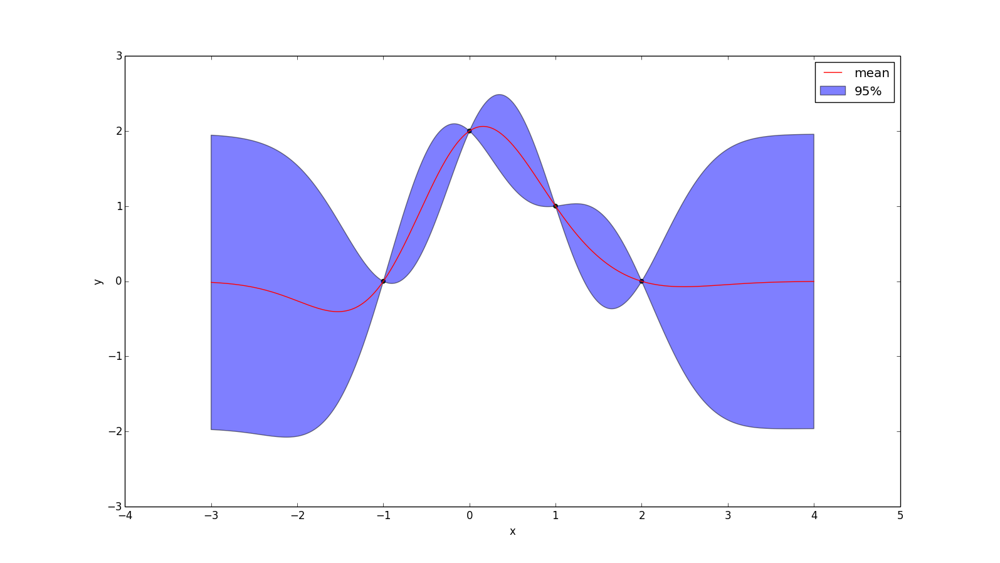
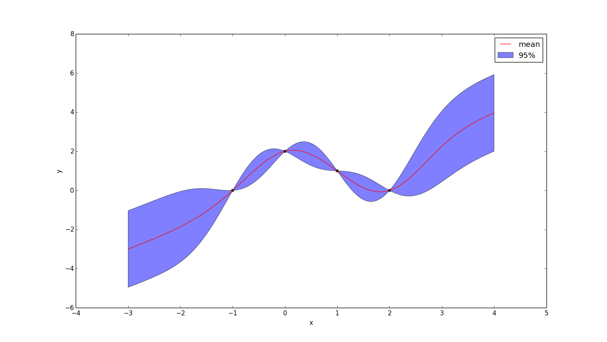

Gaussian Processes
Def: A Gaussian Process is a collection of random variables, any finite number of which have a joint Gaussian distributionBrief Overview of Linear Regression
Let $X$ and $\vec{y}$ be your observations (i.e. your "training data"). The Bayesian approach to linear regression is to assume that \[ \vec{y} = X^T \vec{w} + \vec{\epsilon} \]For some vector $\vec{w}$, where $\epsilon$ is a normally distributed noise with mean=0 and standard deviation = $\sigma$. It turns out the maximum likelihood estimator for $w$ is the same line that minimizes squared error.
What's interesting about this formulation of the problem is that, rather than merely a line, it yields a normal distribution at every x value. In other words, the probability distribution over the value $y_*$ at some $x_*$ is: \[ p(y_* | X, \vec{y}, \vec{x}_*) \propto \mathcal{N}(\mu = \vec{x}_*^Tw, \text{var} = \sigma^2) \]
Of course there are a wide number of nonlinear relationships that cannot be represented as a linear regression. A common trick to expand this same machinery to a wider class of functions is to use some function \[ \phi: \mathbb{R}^D \rightarrow \mathbb{R}^N \] to map data from a low dimensional space to a higher dimensional space, and then performing linear regression on the higher-dimensional vectors. For example, if you map $\mathbb{R}^1$ to $\mathbb{R}^4$ with: \[ \phi(x) = [1, x, x^2, x^3] \] then a linear regression on $\phi[X]$ is equivalent to finding the least-squares cubic polynomial. In essence, by choosing some $\phi$, you're claiming that you believe the data can be modeled as \[ \vec{y} + \vec{\epsilon} = \phi[X]^T \vec{w} \]
Kernel Trick
The least-squares solution (i.e. the MLE, assuming it is a linear function with Gaussian noise) is solved with the following formula: \[ p(y_* | \vec{x}_*, X, \vec{y}) = \mathcal{N}(\frac{1}{\sigma^2} \phi(x_*)^T A^{-1} \phi[X] y, \phi(x_*)^T A^{-1} \phi(x_*)) \] Where $A = \sigma^{-2}\phi[X] \phi[X]^T + \Sigma^{-1}$, where $\Sigma$ is the covariance matrix of the prior on $\vec{w}$. Note that $A$ is a square matrix and its size is equal to the dimensionality of $\phi(x)$
The kernel trick is a trick in machine learning (and elsewhere) which, informally, involes swapping the dimensionality of your data points with the number of data points you have. If you have data with high dimensionality and few points, you can often rephrase the problem as having low dimensionality and a high number of points (or vice-versa).
To arrive at Gaussian Processes, we will try to "kernalize" the linear regression formulation described above. To do this, we will suppose we have some function $k(x_1,x_1) = \phi(x_1)^T \Sigma \phi(x_2)$ — i.e. the inner product of the points $x_1$ and $x_1$ (after their feature expansion). This function is called the kernel.
We will also extend this notation to matrices (i.e. sets of points): \[ k(A, B) = \begin{bmatrix} k(A_1, B_1) & k(A_1, B_2) & \dots & k(A_1, B_m)\\ k(A_2, B_1) & k(A_2, B_2) & \dots & k(A_2, B_m)\\ \vdots & \vdots & \ddots & \vdots \\ k(A_n, B_1) & k(A_n, B_2) & \dots & k(A_n, B_m)\\ \end{bmatrix} \] It can be shown (not here!) that this allows us to re-write the linear regression as: \[ p(y_* | \vec{X}_*, X, \vec{y}) = \mathcal{N}(\] \[\mu = k(X_*, X) K^{-1} y,\] \[\text{var} = k(X_*, X_*) - k(x_*, X) K^{-1} k(X, X_*)\] \[) \] where $K = k(X, X)$.
Note that this formula can be used to evaluate any number of points (stored in $X_*$) based on any number of observed-points (stored in $X$). The result is a multi-variate normal distribution over what the value of the function is at each of the $X_*$ variables.
Why Did We Do This?
First note that $K$ is a $|X| \times |X|$ matrix, which means that, as promised, calculating predictions no longer scales with the dimensionality of the data, but with the number of datapoints we have... and how long it takes us to compute the kernel.
Indeed, it can be complained that we merely wrapped up the "dimension scaling" part of the computation inside the magic $k(x_1,x_1) = \phi(x_1)^T \Sigma \phi(x_2)$ kernel function. And, indeed, we have! What's key is that there are many (useful!) feature expansions whose corresponding kernel can be far more efficiently calculated than its corresponding $\phi$. This efficiency is taken to the extreme when $\phi$ maps to an infinite dimensional space, which is ultimately where much of the fascination with Gaussian Processes comes from.
That being said, this writer doesn't think that describing Gaussian Processes as "a way to do feature expansions into infinite-dimensional space" as a very useful way to describe them (at least at first), because it is typically tricky to "convert" a feature expansion $\phi$ to its corresponding kernel $k$.
A more intruitive explantion of what exactly the kernel function is is that it is a measure of similarity of two points. In particular, it evaluates the covariance of their corresponding y values. What's interesting about this is that Gaussian processes don't look at the y-values at all when determining the similarity of two points!
Example
For this example we will use the kernel \[k(x_1, x_2) = e^{-(x_1 - x_2)^2}\] And the observations \[ \begin{bmatrix} (-1, 0)\\ (0, 2)\\ (1, 1)\\ (2, 0)\\ \end{bmatrix} \] Using the formula for $p(y_* | \vec{X}_*, X, \vec{y})$ above we can get a multivariate normal distribution for any finite number of points we want. In this case, I evaluated it at 700 evenly spaced points between -3 and 4. This resulted in a multivariate normal distribution defined by some 400-long $\vec{\mu}$ vector and a $400 \times 400$ covariance matrix (we'll call $\Sigma$).
$\vec{\mu}$ is plotted below as a red line. The diagonal of the covariance matrix gives us the variance of each distribution. If we take the square root and multiply by $1.96$ we can find a region for every $x$ that has a 95% chance of containing the "true" function
Note that the red line hits every observed point exactly, and that our uncertainty at those points vanishes to zero, but the farther from those points we get, the less certain we are. This leads us to our next consideration:
Noise
As you may have noticed, I have been subtlely ignoring noise terms. Adding noise terms is a simple matter of adding $\sigma^2 I$ to $K(X,X)$. \[ p(y_* | \vec{X}_*, X, \vec{y}) = \mathcal{N}(\] \[\mu = k(X_*, X) (K + \sigma^2 I)^{-1} y,\] \[\text{var} = k(X_*, X_*) - k(x_*, X) (K + \sigma^2 I)^{-1} k(X, X_*)\] \[) \]
Non-zero Prior
Another thing you may have noticed is that in the above image the function tends towards zero when it lacks any other information. While this may be completely reasonable in some situations, it would naturally be desirable to encode other priors.
Let $\bar{y}(X)$ yield your prior guess for every point in $X$. Then: \[ p(y_* | \vec{X}_*, X, \vec{y}) = \mathcal{N}(\] \[\mu = \bar{y}(X_*) + k(X_*, X) (K + \sigma^2 I)^{-1} (y - \bar{y}(X)),\] \[\text{var} = k(X_*, X_*) - k(x_*, X) (K + \sigma^2 I)^{-1} k(X, X_*)\] \[) \] The effect of applying the prior $\bar{y}(x) = x$ to the example above is shown below. Note that the uncertainty at every point is unchanged from when we had a prior of zero.
Weighted Average Interpretation
It is convenient to examine the case where there is only one test point — when $|X_*| = 1$ and $K(X_*, X_*)$ is a scalar. In this case, the resulting prediction is a normal distribution (not multivariate) and we can rewrite the mean as simply a weighted sum of the training weights' predictions: \[\bar{f}(x_*) = \sum_{i=1}^n \alpha_i \cdot k(x_i, x_*)\] Where $\alpha_i$ is the ith element of $(K(X,X) + \sigma^2 I)^{-1} y$.
If it seems odd that we went through such lengths to simply derive the idea of using a weighted sum to approximate a function, first remember that Gaussian Processes also gives us a measure of our uncertainty (in fact they give us a pdf). Furthermore what makes Gaussian processes better then a simple weighted average is the $(K(X,X) + \sigma^2 I)^{-1}$ term, which captures the idea that points that are near each other offer redundant information about points in their vicinity.